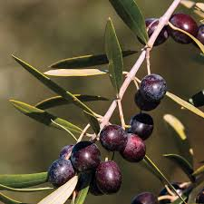
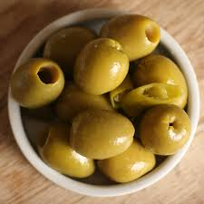

Olives originally came from the Mediterranean basin, near Syria and Iran around 6000-8000 years ago. Olive trees are one of the first fruit trees to become domesticated by humans.
Olives and the tree itself can be used for food, lamp fuel, self care, medicine, and olive tree wood can be used for construction. They have often been used to symbolize peace, longevity, and wisdom. Athena is said to have gifted the first olive tree to Athens in Greek mythology.
Olives had long been used on flatbreads that somewhat accurately resembled pizza in the Mediterranean, but it wasn’t until the mid 1900s that the US became really engrossed with pizza, particularly with black olives which, to the west coast, represented a Mediterranean style. Black olives are the most common type used today in pizza
because of their mild salty flavor that doesn’t override the other flavors of the other pizza toppings. Unripe green olives give a harder and more acidic taste that stands out.
